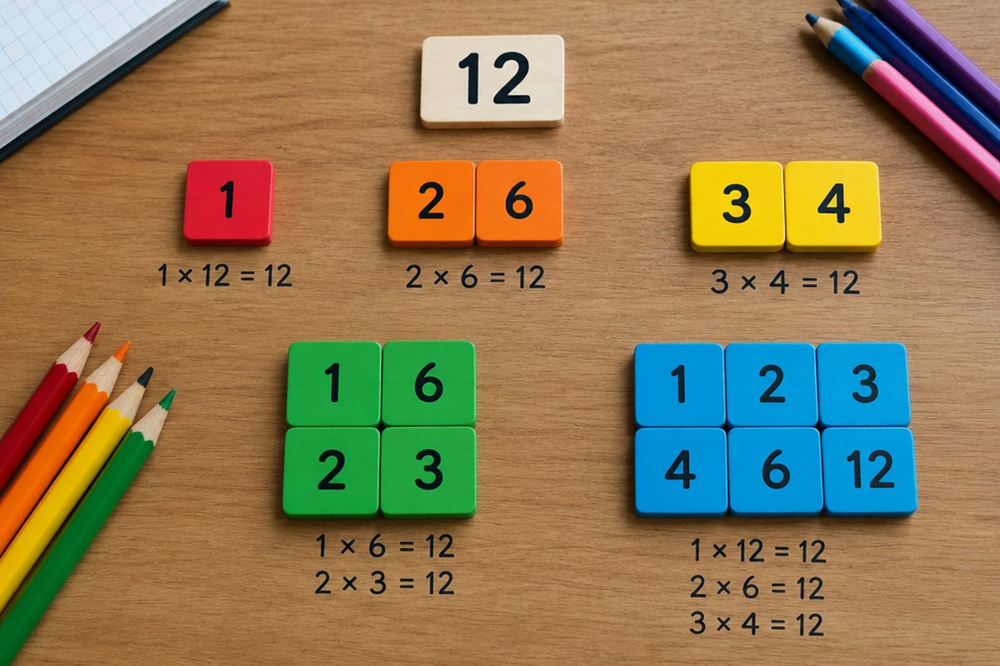

나누어떨어지는 수에는 어떤 규칙이 있을까?

사탕 12개를 남김없이 똑같이 나누려면 몇 명에게 나눌 수 있을까요? 이 질문의 답을 찾다 보면 약수와 배수를 만나게 돼요.
약수: 나누어떨어지게 하는 수
어떤 수를 나누어떨어지게 하는 수를 그 수의 약수라고 해요. 12는 1, 2, 3, 4, 6, 12로 나누면 나누어떨어지므로 이 수들이 12의 약수예요.
1은 모든 수의 약수이고, 어떤 수 자신도 항상 그 수의 약수예요.
12의 약수: 1, 2, 3, 4, 6, 12
배수: 몇 배 한 수
어떤 수를 1배, 2배, 3배…한 수를 그 수의 배수라고 해요. 4의 배수는 4, 8, 12, 16…처럼 끝없이 이어져요.
4 × 3 = 12에서 12는 4와 3의 배수이고, 4와 3은 12의 약수예요. 약수와 배수는 곱셈식 하나로 연결되어 있어요.
4의 배수: 4, 8, 12, 16, …
공약수와 최대공약수
두 수의 공통된 약수를 공약수, 그중 가장 큰 수를 최대공약수라고 해요.
18의 약수는 1, 2, 3, 6, 9, 18이고 24의 약수는 1, 2, 3, 4, 6, 8, 12, 24예요. 공약수는 1, 2, 3, 6이고 최대공약수는 6이에요. 공약수는 최대공약수의 약수와 같아요.
18과 24의 최대공약수 = 6
이렇게 풀어요: 최소공배수 구하기
두 수의 공통된 배수를 공배수, 그중 가장 작은 수를 최소공배수라고 해요. ① 18과 24를 둘 다 나눌 수 있는 수로 나눠요: 2로 나누면 9와 12, 3으로 나누면 3과 4.
② 더 이상 공통으로 나눌 수 없으면 멈춰요. ③ 나눈 수를 곱하면 최대공약수 2 × 3 = 6, 나눈 수와 남은 수를 모두 곱하면 최소공배수 2 × 3 × 3 × 4 = 72예요.
18과 24의 최소공배수 = 2 × 3 × 3 × 4 = 72
핵심 낱말
- 약수
- 어떤 수를 나누어떨어지게 하는 수
- 배수
- 어떤 수를 1배, 2배, 3배…한 수
- 공약수
- 두 수의 공통된 약수
- 최대공약수
- 공약수 중 가장 큰 수
- 공배수
- 두 수의 공통된 배수
- 최소공배수
- 공배수 중 가장 작은 수
한 줄 정리
- 약수는 어떤 수를 나누어떨어지게 하는 수, 배수는 어떤 수를 몇 배 한 수예요.
- 최대공약수는 공약수 중 가장 큰 수, 최소공배수는 공배수 중 가장 작은 수예요.
- 공약수는 최대공약수의 약수이고, 공배수는 최소공배수의 배수예요.
학교 교육과정 연결
- [6수01-04] 약수, 공약수, 최대공약수를 이해하고 구할 수 있다.
- [6수01-05] 배수, 공배수, 최소공배수를 이해하고 구할 수 있다.